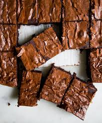

Crinkly Brownies>

Description:
Easiest chewy crinkly brownies for days you have a sweet tooth
Ingredients:
- Cocoa powder
- Icing sugar
- Melted butter
- Salt
- Vegetable oil
- Eggs
- AP flour
Steps:
- In a bowl, mix together 1 cup of high quality cocoa powder, 1/4 cup AP flour, 1.5 cups icing sugar and a pinch of salt
- Add 2 eggs to the dry mixture and whisk until fully mixed
- Add 1/2 cup of melted butter and oil and mix until just mixed
- Line a baking tray with parchment paper
- Pour the brownie mixture into the tray and tap the tray lightly to distribute the mixture evenly
- Bake at 180 degree celsius for about 15 minutes or until done
- Cut into squares and enjoy!